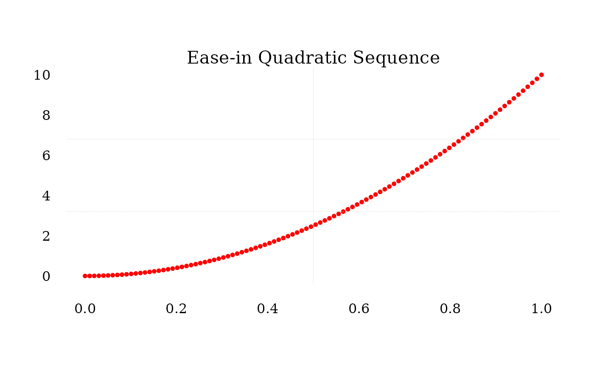
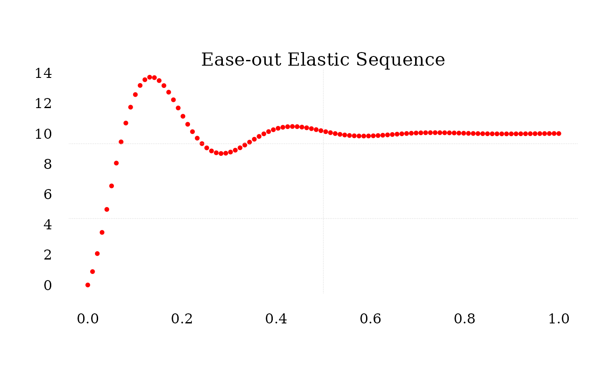

The seq_smooth function generates a sequence of numbers between a specified range (from to to) using different smoothing techniques and easing types. It supports various interpolation methods such as linear, quadratic, cubic, and more. Additionally, easing options (in, out, and in_out) allow for customization of how the transition occurs across the range.
Arguments
- from
A numeric value specifying the starting value of the sequence. Default is 1.
- to
A numeric value specifying the ending value of the sequence. Default is 1.
- n
An integer specifying the number of points in the sequence. Default is 100.
- type
A character string indicating the type of smoothing to apply. Available options include
"linear","quad","cubic","quart","quint","exp","circle","back","elastic","sine","bounce", and"step". Default is"linear".- step_count
An integer specifying the number of discrete steps for the
"step"type. IfNULL, defaults to 4.The number of steps cannot exceed 'n'.- ease
A character string indicating the easing direction to apply. Available options are
"in"(smooth transition at the start),"out"(smooth transition at the end), and"in_out"(smooth transition at both start and end). Required for non-linear types. Default isNULL.
Details
The function calculates a sequence based on the specified type and applies the easing (ease) to modify how values progress. For "linear" types, no easing is applied, and the sequence is uniformly spaced. For other types, the function supports easing that modifies the progression curve.
Linear: A straight-line interpolation.
Quadratic to Quintic: Higher-degree polynomial interpolations.
Exponential: Exponential interpolation.
Elastic and Bounce: Nonlinear interpolations with oscillations.
Step: A step-wise progression with discrete levels.
The ease parameter controls how values are distributed along the sequence:
"in": Starts slow and accelerates."out": Starts fast and decelerates."in_out": Combines both for a smooth start and end.
For "step" type, step_count specifies the number of steps in the sequence.
Examples
# Linear sequence from 0 to 10
t <- seq(0,1,length.out = 100)
lin_seq <- seq_smooth(0, 10, n = 100, type = "linear")
plot.new()
plot.window(range(t),range(lin_seq))
points(t,lin_seq,pch = 16, cex = .75,col = "red")
axis(1,tcl = 0.75,lwd = 0, family = "serif")
axis(2,lwd = 0, family = "serif", las = 1)
grid(2,3,col = "gray80",lty = "dotted", lwd = 0.50)
mtext("Linear Sequence",3,cex = 1.3, family = "serif")
# Quadratic easing in sequence
quad_seq <- seq_smooth(0, 10, n = 100, type = "quad", ease = "in")
plot.new()
plot.window(range(t),range(quad_seq))
points(t,quad_seq,pch = 16, cex = .75,col = "red")
#> Error in xy.coords(x, y): 'x' and 'y' lengths differ
axis(1,tcl = 0.75,lwd = 0, family = "serif")
axis(2,lwd = 0, family = "serif", las = 1)
grid(2,3,col = "gray80",lty = "dotted", lwd = 0.50)
mtext("Ease-in Quadratic Sequence",3,cex = 1.3, family = "serif")

# Step sequence with 5 steps
step_seq <- seq_smooth(0, 10, n = 100, type = "step", step_count = 5)
plot.new()
plot.window(range(t),range(step_seq))
lines(t,step_seq,pch = 16, cex = .75,col = "red")
axis(1,tcl = 0.75,lwd = 0, family = "serif")
axis(2,lwd = 0, family = "serif", las = 1)
grid(2,3,col = "gray80",lty = "dotted", lwd = 0.50)
mtext("Step Sequence",3,cex = 1.3, family = "serif")
# Elastic easing out sequence
elastic_seq <- seq_smooth(0, 10, n = 100, type = "elastic", ease = "out")
plot.new()
plot.window(range(t),range(elastic_seq))
points(t,elastic_seq,pch = 16, cex = .75,col = "red")
#> Error in xy.coords(x, y): 'x' and 'y' lengths differ
axis(1,tcl = 0.75,lwd = 0, family = "serif")
axis(2,lwd = 0, family = "serif", las = 1)
grid(2,3,col = "gray80",lty = "dotted", lwd = 0.50)
mtext("Ease-out Elastic Sequence",3,cex = 1.3, family = "serif")
